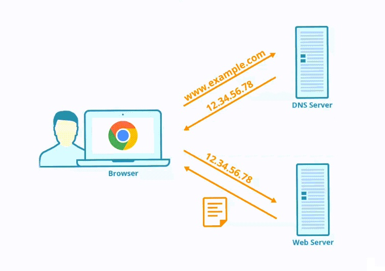

How Browsers Load and Display Webpages
Created by Vitali Klimza(VitaliKlm)
what happens after the browser receives the web page address?
- establishing a connection to the server
- transferring data and receiving html document
- parsing and displaying the received document
getting the IP address of the server
- URL-address is converted to an IP-address
- browser looks for an IP in the cache
- browser connects to the DNS server to get IP
DNS Lookup
DNS (Domain Name System) - is a decentralized naming system for computers, services, or other resources connected to the Internet or a private network.

Connecting
Browser connects to the server via TCP
TCP (Transmission Control Protocol)
System of "three-way handshake"
HTTPS protocol
HTTPS uses encryption, and a special certificate confirms the security of the connection
HTTP request
Client side sends a request to the server
Request message contains the address that you are trying to reach
Request message specifies the data type of the response
Server request processing
web server (Apache HTTP Server, NGINX)
HTTP response
Server sends the data to the browser
Client get response status code:
- Informational responses (100–199)
- Successful responses (200–299)
- Redirects (300–399)
- Client errors (400–499)
- Server errors (500–599)
Dev tools HTTP response example
server sent data in small packets
Parsing
Parsing steps include
- Building the DOM
- Building the CSSOM
- Preload scanner
result - hierarchal structures (trees)
Render
Rendering steps include
- style
- layout
- paint
- compositing
Style
DOM and CSSOM are combined in a render tree
Layout
determination of the size and position of each object on the page
Paint
browser converts each box calculated in the layout phase to pixels on the screen